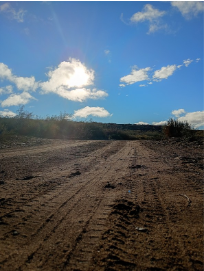
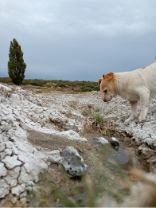

¿Has pensado alguna vez qué más puede haber en una foto de paisaje o retrato?
Una foto de un lugar o el retrato de alguien va mucho más allá de lo que muestra: detrás de la imagen hay más que un simple recuerdo, y en este artículo lo vamos a descubrir.

Más allá del recuerdo
Las fotos, además de mostrarnos un recuerdo que decidimos inmortalizar con una imagen, nos llevan a pensar en lo que sentimos en el momento de tomarla. Las utilizamos para recordar algo o porque un paisaje nos pareció lindo, pero si lo pensamos mejor está la emoción: puede que hayamos sentido felicidad al tomarla, o nostalgia también.
Si nos sentamos a pensar en lo que hay más allá de la fotografía, podemos hacer una descripción mucho más detallada: qué hay en esa imagen, árboles, animales, agua, insectos, entre otras cosas. Nosotros también habitamos esa naturaleza: la observamos, la tocamos, sentimos el olor de un ambiente natural.

Fotografiar y preservar la naturaleza
Si queremos seguir viendo la naturaleza viva como en las imágenes, podemos empezar a ayudar a preservarla para los que en ella habitan. Los animales se extinguen por la contaminación, la basura, la caza o la tala de árboles, que son fundamentales para la vida silvestre y también para nosotros.
Por eso es necesario que preservemos la naturaleza: aunque sea un poco, estaremos ayudando.
Estar en un entorno de naturaleza y tomar fotos nos ayuda a concientizar sobre ella y a sentir la emoción de seguir conociéndola.
Bianca Guaiquian · Sede Yaminué